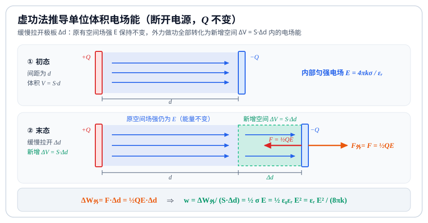

<meta data-alternate="https://freshmark.sunisalex.org/en/" data-article="true" data-canonical="https://freshmark.sunisalex.org/posts/physics/parallel-plate-capacitor/" data-description="以平行板电容器为主线，串起三个常被单独记忆的“二分之一”：极板间的静电引力、恒压充电时 50% 的能量转化效率，以及单位体积的电场能密度，并用虚功法完成力、路、场能的闭环。" data-freshmark-page data-title="平行板电容器的三个“二分之一”：受力、充电与电场能密度 — Freshmark"><main><header class="container article-header"><a href="/" class="back-link">← 返回全部文章</a><p class="eyebrow article-subject">物理</p><h1>平行板电容器的三个“二分之一”：受力、充电与电场能密度</h1><p class="article-dek">以平行板电容器为主线，串起三个常被单独记忆的“二分之一”：极板间的静电引力、恒压充电时 50% 的能量转化效率，以及单位体积的电场能密度，并用虚功法完成力、路、场能的闭环。</p><div class="article-meta"><time datetime="2026-11-15">2026年11月15日</time><span>4 分钟阅读</span><span>物理 · 高中物理 · 电磁学 · 电容器</span><span class="view-count" data-article-view-count hidden>本文访问量 <strong data-article-views></strong></span><a href="index.md" download>下载 Markdown</a><button type="button" class="article-share" data-share-article data-share-text="以平行板电容器为主线，串起三个常被单独记忆的“二分之一”：极板间的静电引力、恒压充电时 50% 的能量转化效率，以及单位体积的电场能密度，并用虚功法完成力、路、场能的闭环。" data-share-title="平行板电容器的三个“二分之一”：受力、充电与电场能密度"><span data-share-label>分享文章</span></button><output aria-live="polite" class="visually-hidden" data-share-status role="status"></output></div></header><div class="article-wrap"><aside class="toc"><div class="toc-head"><p>本文目录</p><button type="button" class="toc-toggle" aria-expanded="false" aria-label="展开或收起目录" data-toc-toggle><span class="toc-toggle-label">目录</span><span class="toc-toggle-icon" aria-hidden="true"></span></button></div><nav aria-label="目录" class="toc-links" data-toc-links><a href="#一-两极板间的作用力为什么不是-而是-" class="toc-level-2">一、 两极板间的作用力：为什么不是 <span class="math-expression math-inline" data-math-source="QE"></span>&#32;而是 <span class="math-expression math-inline" data-math-source="\frac{1}{2}QE"></span>？</a><a href="#二-电源充电的效率悖论为什么只有一半电能变成电场能" class="toc-level-2">二、 电源充电的“效率悖论”：为什么只有一半电能变成电场能？</a><a href="#如果回路完全无电阻呢" class="toc-level-3">如果回路完全无电阻（<span class="math-expression math-inline" data-math-source="r = 0"></span>）呢？</a><a href="#如果让电流趋近于零-准静态充电呢" class="toc-level-3">如果让电流趋近于零（<span class="math-expression math-inline" data-math-source="i \to 0"></span>&#32;准静态充电）呢？</a><a href="#三-单位体积的电场能两条路线的合流" class="toc-level-2">三、 单位体积的电场能：两条路线的合流</a><a href="#总结" class="toc-level-2">总结</a></nav></aside><article class="prose"><p>高中物理讲到平行板电容器时，通常在电容决定式 <span class="math-expression math-inline" data-math-source="C = \frac{\varepsilon_r S}{4\pi k d}"></span>&#32;和“<span class="math-expression math-inline" data-math-source="Q"></span>&#32;不变 / <span class="math-expression math-inline" data-math-source="U"></span>&#32;不变”的动态分析处就收尾了。但如果再多追问几步，就会碰到三个表面孤立、实则紧紧咬合在一起的“二分之一”：</p><ol><li>两极板间的引力为什么是 <span class="math-expression math-inline" data-math-source="\frac{1}{2}QE"></span>，而不是 <span class="math-expression math-inline" data-math-source="QE"></span>？</li><li>电源把电容器充到 <span class="math-expression math-inline" data-math-source="U = \epsilon"></span>&#32;时，为什么只有 <span class="math-expression math-inline" data-math-source="\frac{1}{2}"></span>&#32;的电能变成电场能？</li><li>这两件事合在一起，如何导出单位体积的电场能（能量密度）？</li></ol><blockquote><p><strong>符号约定</strong>：为避免能量与场强重名，下文统一用 <span class="math-expression math-inline" data-math-source="E"></span>&#32;表示板间合场强（单极板场强记为 <span class="math-expression math-inline" data-math-source="E_s"></span>），用 <span class="math-expression math-inline" data-math-source="W_E"></span>&#32;表示电容器储存的电场能，用 <span class="math-expression math-inline" data-math-source="\epsilon"></span>&#32;表示电源电动势。</p></blockquote><h2 id="一-两极板间的作用力为什么不是-而是-">一、 两极板间的作用力：为什么不是 <span class="math-expression math-inline" data-math-source="QE"></span>&#32;而是 <span class="math-expression math-inline" data-math-source="\frac{1}{2}QE"></span>？</h2><p></p><p>想要分析平行板电容器两极板间的静电引力，首先就要算出极板处的有效电场强度。</p><p>虽然极板间的电场可以视为匀强电场，但极板所在位置的施力场强与板间合场强并不相同——<strong>带电体自身不能对自己施加电场力</strong>。</p><p>于是，我们自然设出单块极板在两侧激发的匀强电场强度大小 <span class="math-expression math-inline" data-math-source="E_s"></span>（<span class="math-expression math-inline" data-math-source="s = \text{single}"></span>）：</p><ul><li>在两板之间，正、负两板激发的电场强度同向等大，叠加后 <span class="math-expression math-inline" data-math-source="E = 2E_s"></span>；</li><li>在两极板之外，两板激发的电场强度反向等大，叠加后 <span class="math-expression math-inline" data-math-source="E_{\text{外}} = E_s - E_s = 0"></span>。</li></ul><p>由此，可以解释平行板电容器“场强集中在板间、板外为零”的特征。而站在其中一块极板的位置上看，真正对它施力的只有另一块极板激发的电场，场强大小为 <span class="math-expression math-inline" data-math-source="E_s = \frac{1}{2}E"></span>。</p><p>因此，两极板间的静电引力大小为： <span class="math-expression math-display" data-math-source="F = E_s Q = \frac{1}{2}EQ = \frac{Q^2}{2\varepsilon_0 \varepsilon_r S} = \frac{2\pi k Q^2}{\varepsilon_r S}" data-math-display></span> 可以看到，当极板带电量 <span class="math-expression math-inline" data-math-source="Q"></span>&#32;不变时，两板之间的相互引力大小与板间距 <span class="math-expression math-inline" data-math-source="d"></span>&#32;无关——这个性质将在第三节派上大用场。</p><h2 id="二-电源充电的效率悖论为什么只有一半电能变成电场能">二、 电源充电的“效率悖论”：为什么只有一半电能变成电场能？</h2><p></p><p>电动势为 <span class="math-expression math-inline" data-math-source="\epsilon"></span>、内阻为 <span class="math-expression math-inline" data-math-source="r"></span>&#32;的直流电源对初态不带电的电容 <span class="math-expression math-inline" data-math-source="C"></span>&#32;充电直至稳态。我们审视过程中的能量变化。</p><p>熟知电容器的电场能计算公式（结合 <span class="math-expression math-inline" data-math-source="u-q"></span>&#32;图像，电压从 <span class="math-expression math-inline" data-math-source="0"></span>&#32;随电荷量线性增至 <span class="math-expression math-inline" data-math-source="U"></span>，储能对应三角形面积）： <span class="math-expression math-display" data-math-source="W_E=\frac{1}{2}UQ=\frac{1}{2}CU^2=\frac{1}{2}\frac{Q^2}{C}" data-math-display></span> 电容器稳定后（<span class="math-expression math-inline" data-math-source="U = \epsilon"></span>）： <span class="math-expression math-display" data-math-source="W_E=\frac{1}{2}Q\epsilon" data-math-display></span> 整个过程中，电源非静电力做功，即产生的总电能： <span class="math-expression math-display" data-math-source="W_{p}=Q\epsilon" data-math-display></span> 可见，只有一半的电能转变为了电场能 <span class="math-expression math-inline" data-math-source="W_E"></span>。</p><p>细细想来，另一半电能被电源内阻 <span class="math-expression math-inline" data-math-source="r"></span>&#32;消耗了。设电阻消耗的电热为 <span class="math-expression math-inline" data-math-source="W"></span>：</p><p><span class="math-expression math-display" data-math-source="dW=i^2(t)r\,dt\\
i(t)r+\frac{Q(t)}{C}=\epsilon\\
Q&#39;(t)r+\frac{Q(t)}{C}=\epsilon" data-math-display></span> 待定系数 <span class="math-expression math-inline" data-math-source="Q(t)=Ae^{kt}+B"></span>： <span class="math-expression math-display" data-math-source="(Ake^{kt})r+\frac{1}{C}(Ae^{kt}+B)=\epsilon\\
\left(Akr+\frac{A}{C}\right)e^{kt}=\epsilon-\frac{B}{C}\\
Q(0)=A+B=0,\quad Q(\infty)=B=C\epsilon\quad (k\lt 0)\\
k=-\frac{1}{Cr},\quad A=-C\epsilon,\quad B=C\epsilon\\
Q(t)=C\epsilon\left(1-e^{-\frac{1}{Cr}t}\right)" data-math-display></span> 结果耐人寻味：理论上讲，电容永远不会达到稳态，只会无限接近.</p><p>记时间常数 <span class="math-expression math-inline" data-math-source="\tau = Cr"></span>（以常见参数 <span class="math-expression math-inline" data-math-source="r = 1\text{ k}\Omega"></span>、<span class="math-expression math-inline" data-math-source="C = 1\text{ }\mu\text{F}"></span>、<span class="math-expression math-inline" data-math-source="\epsilon = 10\text{ V}"></span>&#32;为例，<span class="math-expression math-inline" data-math-source="\tau = 1\text{ ms}"></span>，<span class="math-expression math-inline" data-math-source="Q = C\epsilon \approx 6.24 \times 10^{13}e"></span>）：</p><div class="table-wrap" tabindex="0"><table><thead><tr><th style="text-align:left">经过时间</th><th style="text-align:left">具体时间</th><th style="text-align:left">已充进度 <span class="math-expression math-inline" data-math-source="Q(t)/Q"></span></th><th style="text-align:left">说明</th></tr></thead><tbody><tr><td style="text-align:left"><span class="math-expression math-inline" data-math-source="1\tau"></span></td><td style="text-align:left"><span class="math-expression math-inline" data-math-source="1\text{ ms}"></span></td><td style="text-align:left"><span class="math-expression math-inline" data-math-source="63.21\%"></span></td><td style="text-align:left">—</td></tr><tr><td style="text-align:left"><span class="math-expression math-inline" data-math-source="3\tau"></span></td><td style="text-align:left"><span class="math-expression math-inline" data-math-source="3\text{ ms}"></span></td><td style="text-align:left"><span class="math-expression math-inline" data-math-source="95.02\%"></span></td><td style="text-align:left">—</td></tr><tr><td style="text-align:left"><span class="math-expression math-inline" data-math-source="5\tau"></span></td><td style="text-align:left"><span class="math-expression math-inline" data-math-source="5\text{ ms}"></span></td><td style="text-align:left"><span class="math-expression math-inline" data-math-source="99.33\%"></span></td><td style="text-align:left">工程上通常视作“已充满”</td></tr><tr><td style="text-align:left"><span class="math-expression math-inline" data-math-source="10\tau"></span></td><td style="text-align:left"><span class="math-expression math-inline" data-math-source="10\text{ ms}"></span></td><td style="text-align:left"><span class="math-expression math-inline" data-math-source="99.9955\%"></span></td><td style="text-align:left">每多逼近一个“<span class="math-expression math-inline" data-math-source="9"></span>”多等 <span class="math-expression math-inline" data-math-source="\ln 10 \approx 2.30\tau"></span></td></tr><tr><td style="text-align:left"><span class="math-expression math-inline" data-math-source="31.76\tau"></span></td><td style="text-align:left"><span class="math-expression math-inline" data-math-source="31.8\text{ ms}"></span></td><td style="text-align:left">仅差最后 <span class="math-expression math-inline" data-math-source="1"></span>&#32;个电子</td><td style="text-align:left">触及离散电荷的物理极限</td></tr></tbody></table></div><p>我们言归正传： <span class="math-expression math-display" data-math-source="dW=i^2(t)rdt\\
i(t)=Q&#39;(t)=\frac{\epsilon}{r}e^{-\frac{1}{Cr}t}\\
dW=\frac{\epsilon^2}{r}e^{-\frac{2}{Cr}t}dt\\
W=\int_{0}^{+\infty}\frac{\epsilon^2}{r}e^{-\frac{2}{Cr}t}dt\\
=\frac{1}{2}C\epsilon^2" data-math-display></span> 这是因为，<span class="math-expression math-inline" data-math-source="f(t)=\frac{\epsilon^2}{r}e^{-\frac{2}{Cr}t}"></span>的原函数为<span class="math-expression math-inline" data-math-source="F(t)=-\frac{1}{2}C\epsilon^2e^{-\frac{2}{Cr}t}+D"></span>，其中 <span class="math-expression math-inline" data-math-source="D"></span>&#32;为常数。</p><p>计算结果表明，电阻消耗的焦耳热恰好为 <span class="math-expression math-inline" data-math-source="W = \frac{1}{2}C\epsilon^2 = \frac{1}{2}Q\epsilon"></span>，与电容最终储存的电场能 <span class="math-expression math-inline" data-math-source="W_E = \frac{1}{2}Q\epsilon"></span>&#32;恰好平分了电源非静电力做的总功 <span class="math-expression math-inline" data-math-source="W_p = Q\epsilon"></span>。<strong>更反直觉的是：耗散掉的这一半能量与电阻 <span class="math-expression math-inline" data-math-source="r"></span>&#32;的大小完全无关。</strong></p><h3 id="如果回路完全无电阻呢">如果回路完全无电阻（<span class="math-expression math-inline" data-math-source="r = 0"></span>）呢？</h3><p>既然结果与 <span class="math-expression math-inline" data-math-source="r"></span>&#32;无关，自然会有一个追问：如果用理想超导导线、内阻也为零（<span class="math-expression math-inline" data-math-source="r \to 0"></span>），难道能量还会白白消失一半吗？</p><p>答案是<strong>依然只有一半能稳定留在静电场中</strong>，可以从两个层面理解：</p><ol><li><strong>数学极限视角（<span class="math-expression math-inline" data-math-source="r \to 0^+"></span>）</strong>：当 <span class="math-expression math-inline" data-math-source="r"></span>&#32;越来越小时，充电时间常数 <span class="math-expression math-inline" data-math-source="\tau = Cr \to 0"></span>（过程趋近瞬时完成），但初始峰值电流 <span class="math-expression math-inline" data-math-source="i(0) = \frac{\epsilon}{r} \to \infty"></span>、瞬时热功率 <span class="math-expression math-inline" data-math-source="i^2 r = \frac{\epsilon^2}{r} \to \infty"></span>。时间越短、电流越猛，一消一长之下，积分总热量 <span class="math-expression math-inline" data-math-source="\int_0^{+\infty} i^2 r\,\mathrm{d}t = \frac{1}{2}C\epsilon^2"></span>&#32;始终不变。</li><li><strong>真实物理视角（严格 <span class="math-expression math-inline" data-math-source="r = 0"></span>）</strong>：当电阻真正为零时，纯 <span class="math-expression math-inline" data-math-source="RC"></span>&#32;模型已失效（<span class="math-expression math-inline" data-math-source="i(0)"></span>&#32;发散），必须计入回路本身的<strong>自感 <span class="math-expression math-inline" data-math-source="L"></span></strong> 与<strong>电磁辐射</strong>：<ul><li>若连辐射也忽略（理想 <span class="math-expression math-inline" data-math-source="LC"></span>&#32;回路），由 <span class="math-expression math-inline" data-math-source="L q&#39;&#39; + \frac{q}{C} = \epsilon"></span>&#32;解得 <span class="math-expression math-inline" data-math-source="q(t) = C\epsilon(1 - \cos\omega t)"></span>（<span class="math-expression math-inline" data-math-source="\omega = \frac{1}{\sqrt{LC}}"></span>）。电容充到 <span class="math-expression math-inline" data-math-source="q = C\epsilon"></span>（即 <span class="math-expression math-inline" data-math-source="U = \epsilon"></span>）时电流恰达最大，另一半能量 <span class="math-expression math-inline" data-math-source="\frac{1}{2}C\epsilon^2"></span>&#32;暂存在磁场 <span class="math-expression math-inline" data-math-source="\frac{1}{2}Li^2"></span>&#32;中，随后电流继续冲过头，在 <span class="math-expression math-inline" data-math-source="0"></span>&#32;到 <span class="math-expression math-inline" data-math-source="2C\epsilon"></span>&#32;之间做<strong>无阻尼振荡</strong>，根本无法停在稳态；</li><li>在真实电路中，剧烈变化的电流会向空间<strong>辐射电磁波</strong>，正是电磁辐射带走了这多余的 <span class="math-expression math-inline" data-math-source="\frac{1}{2}C\epsilon^2"></span>，振荡才得以衰减并最终稳定在 <span class="math-expression math-inline" data-math-source="U = \epsilon"></span>。</li></ul></li></ol><p>换言之，只要用<strong>恒定电动势</strong>直接给初态不带电的电容充电，不管耗散的出口是电阻焦耳热还是电磁波辐射，最终稳定下来的电场能永远只有电源总功的一半。</p><h3 id="如果让电流趋近于零-准静态充电呢">如果让电流趋近于零（<span class="math-expression math-inline" data-math-source="i \to 0"></span>&#32;准静态充电）呢？</h3><p>既然损耗来源于 <span class="math-expression math-inline" data-math-source="i^2 r"></span>&#32;和突变电流的辐射，想要突破 <span class="math-expression math-inline" data-math-source="50\%"></span>&#32;的限制，关键就是让电流趋近于零：用电压可调的电源，从 <span class="math-expression math-inline" data-math-source="0"></span>&#32;开始极为缓慢地把电压升至 <span class="math-expression math-inline" data-math-source="\epsilon"></span>（始终只比电容电压高出微小的 <span class="math-expression math-inline" data-math-source="\Delta u"></span>）。在时间 <span class="math-expression math-inline" data-math-source="T \to \infty"></span>&#32;的准静态极限下，电流 <span class="math-expression math-inline" data-math-source="i \sim \frac{Q}{T} \to 0"></span>，电阻发热 <span class="math-expression math-inline" data-math-source="W = \int_0^T i^2 r\,\mathrm{d}t \sim \frac{Q^2 r}{T} \to 0"></span>，电磁辐射也可忽略——此时电源做功不再是 <span class="math-expression math-inline" data-math-source="Q\epsilon"></span>，而是 <span class="math-expression math-inline" data-math-source="\int_0^Q u\,\mathrm{d}q = \frac{1}{2}Q\epsilon"></span>，<strong>几乎 <span class="math-expression math-inline" data-math-source="100\%"></span>&#32;转化为电场能</strong>。</p><h2 id="三-单位体积的电场能两条路线的合流">三、 单位体积的电场能：两条路线的合流</h2><p></p><p>电场能是电场的属性，犹如质量是物质的属性。从比值定义法出发：</p><ul><li>质量除以体积，可以得到物质的基本特性：<strong>密度</strong>；</li><li>电场能除以体积，类似得到电场的基本属性：<strong>单位体积的电场能（能量密度）<span class="math-expression math-inline" data-math-source="w"></span></strong>。</li></ul><p><strong>路线 A（从总储能直接出发）</strong>：由第二节的 <span class="math-expression math-inline" data-math-source="W_E = \frac{1}{2}CU^2"></span>，代入 <span class="math-expression math-inline" data-math-source="C = \frac{\varepsilon_r S}{4\pi k d}"></span>&#32;与 <span class="math-expression math-inline" data-math-source="U = Ed"></span>： <span class="math-expression math-display" data-math-source="w = \frac{W_E}{Sd} = \frac{\frac{1}{2}CU^2}{Sd} = \frac{\varepsilon_r}{8\pi k}E^2 = \frac{1}{2}\varepsilon_0\varepsilon_r E^2" data-math-display></span> （其中利用了静电力常量与真空介电常数的换算 <span class="math-expression math-inline" data-math-source="k = \frac{1}{4\pi\varepsilon_0}"></span>。）</p><p><strong>路线 B（用第一节的引力做虚功）</strong>：断开电源保持极板电荷量 <span class="math-expression math-inline" data-math-source="Q"></span>&#32;不变，此时板间场强 <span class="math-expression math-inline" data-math-source="E"></span>&#32;不随间距 <span class="math-expression math-inline" data-math-source="d"></span>&#32;变化。缓慢将两板拉开 <span class="math-expression math-inline" data-math-source="\Delta d"></span>，外力克服极板引力做功，全部转化为新增空间 <span class="math-expression math-inline" data-math-source="\Delta V = S\Delta d"></span>&#32;内的电场能： <span class="math-expression math-display" data-math-source="\Delta W = F\Delta d = \frac{1}{2}EQ\Delta d = \frac{1}{2}E(CEd)\Delta d = \frac{\varepsilon_r S}{8\pi k}E^2\,\Delta d" data-math-display></span> 每拉开 <span class="math-expression math-inline" data-math-source="\Delta d"></span>，电场体积增加 <span class="math-expression math-inline" data-math-source="S\Delta d"></span>，电场能增加 <span class="math-expression math-inline" data-math-source="\frac{\varepsilon_r S}{8\pi k}E^2\,\Delta d"></span>，故单位体积对应的电场能同样为： <span class="math-expression math-display" data-math-source="w = \frac{\Delta W}{S\Delta d} = \frac{\varepsilon_r}{8\pi k}E^2 = \frac{1}{2}\varepsilon_0\varepsilon_r E^2" data-math-display></span></p><blockquote><p><strong>对比思考</strong>：如果<strong>保持电源接通（<span class="math-expression math-inline" data-math-source="U"></span>&#32;不变）</strong>再把极板拉开 <span class="math-expression math-inline" data-math-source="\Delta d"></span>，空间体积变大了，为什么总电场能 <span class="math-expression math-inline" data-math-source="W_E = \frac{1}{2}CU^2 = \frac{\varepsilon_r S U^2}{8\pi k d}"></span>&#32;反而减小？因为 <span class="math-expression math-inline" data-math-source="E = \frac{U}{d}"></span>&#32;整体变小了（密度 <span class="math-expression math-inline" data-math-source="w \propto E^2"></span>&#32;下降得比体积 <span class="math-expression math-inline" data-math-source="V \propto d"></span>&#32;上升得更快），且外力做的正功连同减少的电场能一起倒灌回了电源。</p></blockquote><h2 id="总结">总结</h2><p>回顾这几个看似零散的结论，三个“<span class="math-expression math-inline" data-math-source="\frac{1}{2}"></span>”其实来自同一套底层物理图景：</p><ol><li><strong><span class="math-expression math-inline" data-math-source="F = \frac{1}{2}QE"></span></strong>：来自<strong>对称性与场强叠加</strong>——极板自身不对自身施力，只感受另一半场强 <span class="math-expression math-inline" data-math-source="E_s = \frac{1}{2}E"></span>；</li><li><strong><span class="math-expression math-inline" data-math-source="W_E = \frac{1}{2}Q\epsilon"></span></strong>：来自<strong>线性响应</strong>——电压随电荷量从 <span class="math-expression math-inline" data-math-source="0"></span>&#32;线性爬升，恒定电动势突加充电必然有一半能量通过焦耳热或电磁辐射耗散；</li><li><strong><span class="math-expression math-inline" data-math-source="w = \frac{\varepsilon_r}{8\pi k}E^2 = \frac{1}{2}\varepsilon_0\varepsilon_r E^2"></span></strong>：既是总储能除以体积，也是虚功法下“新劈出来的那块空间”所储存的能量，把力学、电路与静电场彻底连成了一个自洽的闭环。</li></ol><p>理解了能量是真正储存在“电场所在的空间”里，之后再处理平行板电容器的动态分析与能量账本，就不再需要死记硬背各种二级结论了。</p></article></div><section class="container comments" data-comments data-comments-path="/posts/physics/parallel-plate-capacitor/"><div class="comments-head"><div><p class="eyebrow">评论</p><h2 data-comments-title>评论</h2></div><p>登录后参与讨论。注册时只需验证一次邮箱。</p></div><div class="comment-list" aria-live="polite" data-comment-list><p class="comment-state" data-comment-state>正在加载评论…</p></div><button type="button" class="comment-more" data-comments-more hidden>加载更早的评论</button><div class="comment-auth" data-comment-auth><p class="comment-auth-status" data-auth-loading>正在检查登录状态…</p><div hidden data-auth-guest><form class="comment-auth-form" data-auth-login><h3>登录后评论</h3><label>邮箱<input autocomplete="email" name="email" maxlength="254" required type="email"></label><label>密码<input autocomplete="current-password" name="password" maxlength="128" required type="password"></label><div class="comment-form-foot"><p class="comment-form-status" role="status" data-auth-login-status></p><button type="submit">登录</button></div></form><details class="comment-register"><summary>还没有账号？注册</summary><form class="comment-auth-form" data-auth-register><label>昵称<input autocomplete="name" name="name" maxlength="40" required></label><label>邮箱<input autocomplete="email" name="email" maxlength="254" required type="email"></label><label>密码<input autocomplete="new-password" name="password" maxlength="128" required type="password" minlength="8"></label><p class="comment-auth-hint">至少 8 个字符。</p><div class="comment-form-foot"><p class="comment-form-status" role="status" data-auth-register-status></p><button type="submit">注册</button></div></form></details></div><form class="comment-auth-form" hidden data-auth-verify><p>验证码已发送到邮箱，请在 10 分钟内完成注册。</p><label>六位验证码<input autocomplete="one-time-code" name="code" maxlength="6" required minlength="6" inputmode="numeric" pattern="[0-9]{6}"></label><div class="comment-form-foot"><p class="comment-form-status" role="status" data-auth-verify-status></p><button type="submit">完成注册</button></div></form><div class="comment-auth-user" data-auth-user hidden><p>当前登录： <strong data-auth-user-name></strong> <span data-auth-user-email></span></p><button type="button" data-auth-logout>退出登录</button></div></div><form class="comment-form" hidden data-comment-form><label>评论内容<textarea maxlength="2000" minlength="2" name="body" placeholder="写下你的想法…" required rows="5"></textarea></label><p class="comment-markdown-hint">支持 Markdown：加粗、链接、引用、列表和代码。</p><label aria-hidden="true" class="comment-honeypot">Website<input autocomplete="off" name="website" tabindex="-1"></label><div class="comment-form-foot"><p class="comment-form-status" role="status" data-comment-form-status></p><button type="submit" data-comment-submit>发表评论</button></div></form></section></main>